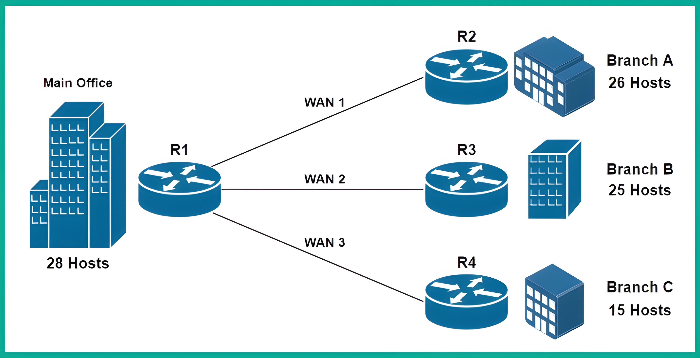

Introduction
üìò What is Subnetting?
Subnetting is the practice of dividing a large network into smaller, manageable sub-networks (subnets). This helps in:
- Efficient IP address utilization
- Better network performance and security
- Simplified network management
- Reduced network congestion
üìò What is VLSM?
Variable Length Subnet Masking (VLSM) allows you to use different subnet masks for different subnets within the same network. This provides even more flexibility in IP address allocation and reduces waste.
The Scenario
This guide presents a step-by-step process for creating an IPv4 addressing scheme for an organization with four offices interconnected via a Wide Area Network (WAN). The scenario involves:
Main Office
Central headquarters
28 HostsBranch A
Regional office
26 HostsBranch B
Regional office
25 HostsBranch C
Regional office
15 HostsNetwork Topology
Network Requirements:
- Main Office: 28 hosts
- Branch A: 26 hosts
- Branch B: 25 hosts
- Branch C: 15 hosts
- 3 WAN links (2 hosts each)
This tutorial will demonstrate how to use subnetting and Variable Length Subnet Masking (VLSM) to efficiently allocate IP addresses while minimizing waste and planning for future growth.
Step 1: Determining the Appropriate IPv4 Block
üéØ Goal of This Step
In this step, we will analyze our network requirements and choose the most appropriate IP address block that can accommodate all our offices while minimizing IP address waste.
Network Requirements Analysis
Count All Networks
Identify every network segment that needs IP addresses
Find Largest Network
Determine which network needs the most IP addresses
Choose Address Block
Select appropriate class to minimize waste
First, we need to determine the total number of networks required:
üñ•Ô∏è LAN Networks (Local Area Networks)
üîó WAN Networks (Point-to-Point Links)
üîç Key Finding
The largest network is the Main Office LAN requiring 28 hosts.
This is crucial because our subnet must be large enough to accommodate this network plus room for growth.
Understanding IP Address Classes
Best for: Very large organizations
Network Bits: 8 bits (first octet)
Host Bits: 24 bits (last 3 octets)
Example: 10.0.0.0/8
Best for: Medium to large organizations
Network Bits: 16 bits (first 2 octets)
Host Bits: 16 bits (last 2 octets)
Example: 172.16.0.0/16
Best for: Small to medium organizations
Network Bits: 24 bits (first 3 octets)
Host Bits: 8 bits (last octet)
Example: 192.168.0.0/24
Subnet Mask Reference Table
| Class | Address Range | Default Subnet Mask | CIDR Notation |
|---|---|---|---|
| A | 1.0.0.0 - 126.255.255.255 | 255.0.0.0 | /8 |
| B | 128.0.0.0 - 191.255.255.255 | 255.255.0.0 | /16 |
| C | 192.0.0.0 - 223.255.255.255 | 255.255.255.0 | /24 |
IP Address Calculations
üìê Understanding the Formulas
Why do we subtract 2? In every subnet, two IP addresses are reserved:
- Network Address: First IP (identifies the network itself)
- Broadcast Address: Last IP (used to send data to all hosts)
Therefore, if a subnet has 256 total IPs, only 254 can be assigned to actual devices.
Formulas:
2^H2^H - 2Calculation Examples:
Address Space Comparison
Important Note:
The chosen subnet size must be large enough to accommodate the largest network. Since our largest network requires 28 hosts, and a Class C network provides 254 usable IP addresses, we'll use 192.168.0.0/24 to avoid address wastage that would occur with Class A or B networks.
Interactive Subnet Calculator
Try calculating subnet requirements for different host counts:
Step 2: Creating New Subnets (Subnetworks)
Binary Conversion and Subnet Creation
We start with the Class C address block 192.168.0.0/24 and convert it to binary notation to create subnets by converting host bits to network bits.
Original Network (192.168.0.0/24):
| Octet | Decimal | Binary |
|---|---|---|
| 1st | 192 | 11000000 |
| 2nd | 168 | 10101000 |
| 3rd | 0 | 00000000 |
| 4th | 0 | 00000000 |
Calculating Number of Networks
Formula: Number of Networks = 2^N (where N = borrowed host bits)
- 1 host bit borrowed: 2^1 = 2 networks
- 2 host bits borrowed: 2^2 = 4 networks
- 3 host bits borrowed: 2^3 = 8 networks ✓
Since we need 7 networks total, we'll borrow 3 host bits to create 8 subnets, giving us one extra subnet for future growth.
New Subnet Mask
Original subnet mask: 255.255.255.0 (/24)
New subnet mask: 255.255.255.224 (/27)
Binary Subnet Mask Visualization
| Description | Binary Representation |
|---|---|
| New Subnet Mask | 11111111.11111111.11111111.11100000 |
| Network Bits | ←──────── 27 bits ────────→ |
| Host Bits | ←─ 5 bits ─→ |
Important Subnetting Guidelines:
- Do not modify the original network bits (first 24 bits in this case)
- Only convert host bits to network bits for subnetting
- Each subnet will have 2^5 - 2 = 30 usable IP addresses
Tip:
Use the formula 2^H to calculate incremental values. With 5 host bits remaining: 2^5 = 32, so each subnet will increment by 32.
Step 3: Assigning Subnets to Each Network
Subnet Calculation Guidelines
- Network ID: The subnet address itself
- First Usable IP: Network ID + 1
- Last Usable IP: Next Network ID - 2
- Broadcast Address: Next Network ID - 1
LAN Subnet Assignments
The first four subnets are assigned to the LANs:
Visual Subnet Allocation (192.168.0.0/24 divided into /27 subnets)
Main Office LAN (Subnet 0)
| Parameter | Value |
|---|---|
| Network ID | 192.168.0.0/27 |
| First Usable IP | 192.168.0.1 |
| Last Usable IP | 192.168.0.30 |
| Broadcast Address | 192.168.0.31 |
Branch A LAN (Subnet 1)
| Parameter | Value |
|---|---|
| Network ID | 192.168.0.32/27 |
| First Usable IP | 192.168.0.33 |
| Last Usable IP | 192.168.0.62 |
| Broadcast Address | 192.168.0.63 |
Branch B LAN (Subnet 2)
| Parameter | Value |
|---|---|
| Network ID | 192.168.0.64/27 |
| First Usable IP | 192.168.0.65 |
| Last Usable IP | 192.168.0.94 |
| Broadcast Address | 192.168.0.95 |
Branch C LAN (Subnet 3)
| Parameter | Value |
|---|---|
| Network ID | 192.168.0.96/27 |
| First Usable IP | 192.168.0.97 |
| Last Usable IP | 192.168.0.126 |
| Broadcast Address | 192.168.0.127 |
IP Address Wastage Issue
Problem Identified:
Each /27 subnet provides 30 usable IP addresses, but WAN links only need 2 IP addresses. This results in 28 wasted IP addresses per WAN link.
Solution: Use Variable Length Subnet Masking (VLSM) to create smaller subnets for WAN links.
Unallocated Subnets
The remaining subnets are available for WAN links and future use:
| Subnet | Network ID | Status |
|---|---|---|
| 4 | 192.168.0.128/27 | Reserved |
| 5 | 192.168.0.160/27 | Reserved |
| 6 | 192.168.0.192/27 | Reserved |
| 7 | 192.168.0.224/27 | Available for VLSM |
Step 4: Performing Variable-Length Subnet Masking (VLSM)
VLSM Process Overview
We'll use the eighth subnet (192.168.0.224/27) to create smaller subnets specifically for WAN links, which only need 2 usable IP addresses each.
Calculating Optimal Subnet Size for WANs
Usable IP Calculation: 2^H - 2
- 1 host bit: 2^1 - 2 = 0 usable IPs (insufficient)
- 2 host bits: 2^2 - 2 = 2 usable IPs ✓ (perfect for WAN links)
Creating WAN Subnets
Using 2 host bits, we can create multiple /30 subnets from the /27 subnet:
Number of Networks: 2^N = 2^3 = 8 new /30 subnets
VLSM Process: Subdividing 192.168.0.224/27 into /30 subnets
New Subnet Mask for WAN Links
| Description | Value |
|---|---|
| New Subnet Mask (Decimal) | 255.255.255.252 |
| New Subnet Mask (Binary) | 11111111.11111111.11111111.11111100 |
| CIDR Notation | /30 |
| Network Bits | 30 bits |
| Host Bits | 2 bits |
VLSM Guidelines:
- Always work with unallocated address space
- Start with the smallest required subnet size
- Ensure proper alignment with subnet boundaries
- Document all allocations to avoid overlap
WAN Link Allocations
WAN Link 1: Main Office ↔ Branch A
| Parameter | Value |
|---|---|
| Network ID | 192.168.0.224/30 |
| First Usable IP | 192.168.0.225 |
| Last Usable IP | 192.168.0.226 |
| Broadcast Address | 192.168.0.227 |
WAN Link 2: Main Office ↔ Branch B
| Parameter | Value |
|---|---|
| Network ID | 192.168.0.228/30 |
| First Usable IP | 192.168.0.229 |
| Last Usable IP | 192.168.0.230 |
| Broadcast Address | 192.168.0.231 |
WAN Link 3: Main Office ↔ Branch C
| Parameter | Value |
|---|---|
| Network ID | 192.168.0.232/30 |
| First Usable IP | 192.168.0.233 |
| Last Usable IP | 192.168.0.234 |
| Broadcast Address | 192.168.0.235 |
Reserved WAN Subnets
Additional /30 subnets available for future WAN expansion:
| Subnet | Network ID | Status |
|---|---|---|
| WAN 4 | 192.168.0.236/30 | Reserved |
| WAN 5 | 192.168.0.240/30 | Reserved |
| WAN 6 | 192.168.0.244/30 | Reserved |
| WAN 7 | 192.168.0.248/30 | Reserved |
| WAN 8 | 192.168.0.252/30 | Reserved |
Final Allocation Summary
LAN Allocations (/27 subnets)
| Location | Network ID | Usable IPs | Subnet Mask |
|---|---|---|---|
| Main Office LAN | 192.168.0.0/27 | 192.168.0.1 - 192.168.0.30 | 255.255.255.224 |
| Branch A LAN | 192.168.0.32/27 | 192.168.0.33 - 192.168.0.62 | 255.255.255.224 |
| Branch B LAN | 192.168.0.64/27 | 192.168.0.65 - 192.168.0.94 | 255.255.255.224 |
| Branch C LAN | 192.168.0.96/27 | 192.168.0.97 - 192.168.0.126 | 255.255.255.224 |
WAN Allocations (/30 subnets)
| WAN Link | Network ID | Usable IPs | Subnet Mask |
|---|---|---|---|
| Main ↔ Branch A | 192.168.0.224/30 | 192.168.0.225 - 192.168.0.226 | 255.255.255.252 |
| Main ↔ Branch B | 192.168.0.228/30 | 192.168.0.229 - 192.168.0.230 | 255.255.255.252 |
| Main ↔ Branch C | 192.168.0.232/30 | 192.168.0.233 - 192.168.0.234 | 255.255.255.252 |
Planning for Future Growth:
This addressing scheme provides:
- Efficient use of IP address space with minimal waste
- 3 reserved /27 subnets for additional LANs
- 5 reserved /30 subnets for additional WAN links
- Scalable design supporting organizational expansion
Key Success Factors: Proper planning, understanding of network requirements, and strategic use of VLSM to optimize address allocation.